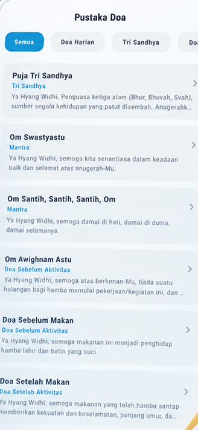
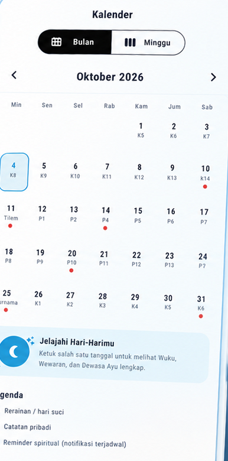

Ingetin dikit, biar nggak salah jalan.
WeKarma menemani keseharian spiritual Hindu Bali: kalender Wuku & Wewaran, Dewasa Ayu, pengingat Tri Sandhya, catatan pribadi, dan pustaka doa — semuanya dalam satu aplikasi.
Lihat fiturKebijakan privasi

Yang kamu dapat
Perhitungan kalender dilakukan langsung di perangkatmu, jadi tetap jalan tanpa internet.
Kalender Bali
Wuku, Wewaran, Sasih, dan Rerainan untuk setiap tanggal. Ketuk satu hari untuk melihat rinciannya.
Dewasa Ayu
Pertimbangan hari baik untuk berbagai kegiatan, dihitung dari pawukon secara tradisional.
Pengingat Tri Sandhya
Notifikasi terjadwal di perangkat untuk tiga waktu persembahyangan harian, plus pengingat Rerainan.
Catatan Pribadi
Catat agenda dan hal yang ingin kamu ingat. Tersinkron antar perangkat lewat akun Google.
Pustaka Doa
Doa harian, Tri Sandhya, dan mantra — dengan audio yang tersimpan lokal agar bisa diputar lagi.
Privasi terjaga
Analitik bisa dimatikan kapan saja. Data akun bisa dihapus langsung dari Pengaturan aplikasi.
Tampilan aplikasi
Geser untuk melihat layar-layar utama WeKarma.